Mesa de Salud Mental
Cuidar tu bienestar emocional también es construir comuna. Aquí encuentras líneas de ayuda, atención psicológica gratuita y rutas de apoyo. No estás solo.
Líneas de Ayuda
La Alcaldía de Medellín, a través de la Secretaría de Salud, ofrece orientación psicológica gratuita a todos los habitantes del Distrito.
Línea Amiga Saludable
Orientación psicológica gratuita, en funcionamiento ininterrumpido desde 1998.
604 444 44 48A través de estas líneas también se puede activar el Código Dorado, destinado a urgencias y emergencias en salud mental (comportamiento suicida, consumo de sustancias o estados de crisis).
Atención Gratuita en Medellín
Escuchaderos
A través de la estrategia Escuchaderos, la Alcaldía brinda atención y orientación psicológica gratuita, acercando el apoyo emocional a las distintas comunas de la ciudad, incluida la nuestra.
Más de 400 psicólogos
La Administración Distrital dispone de un equipo de profesionales que acompañan a la comunidad en colegios, lugares de trabajo y entornos comunitarios para fortalecer la salud mental de los ciudadanos.
Información oficial de la Secretaría de Salud de Medellín. Contenido adaptado con fines informativos.
Galería
Momentos de las actividades y jornadas de la Mesa de Salud Mental en la Comuna 11.
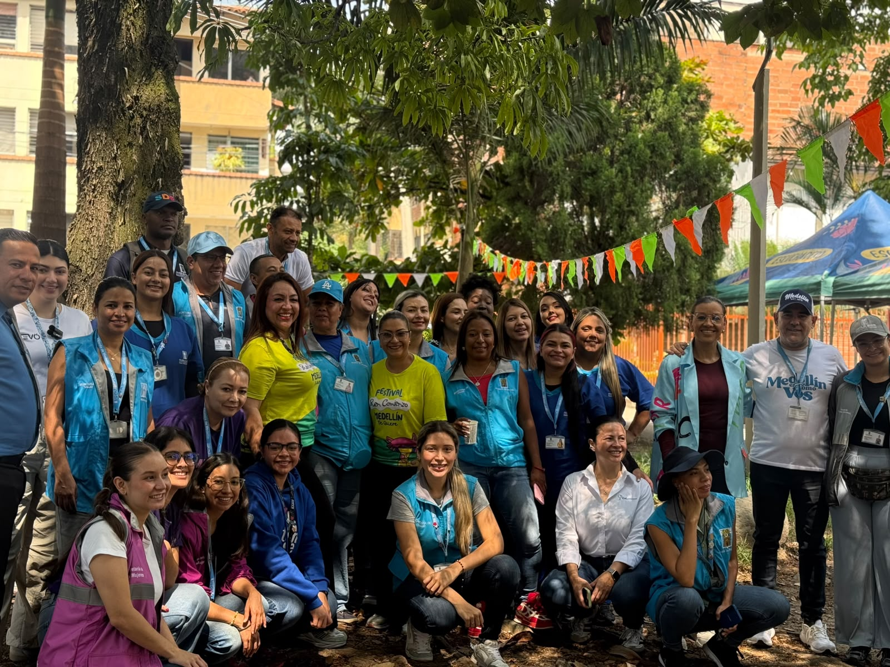
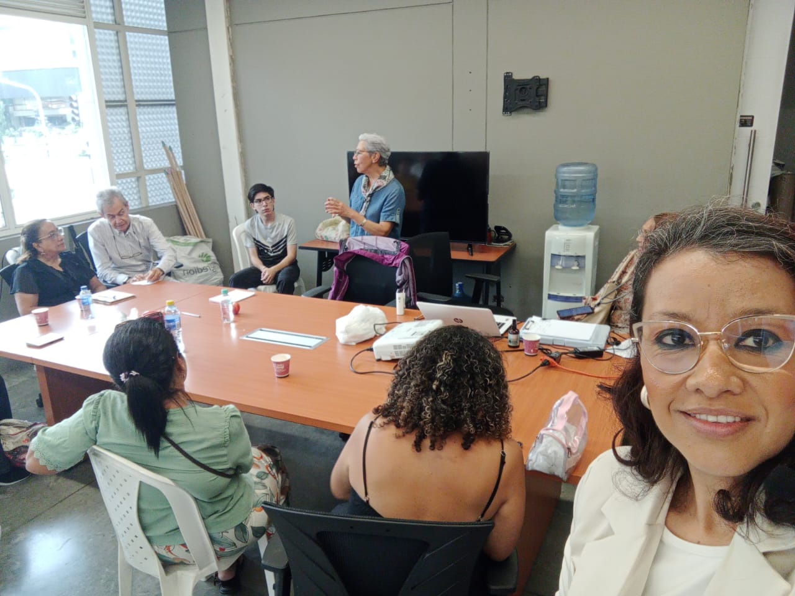
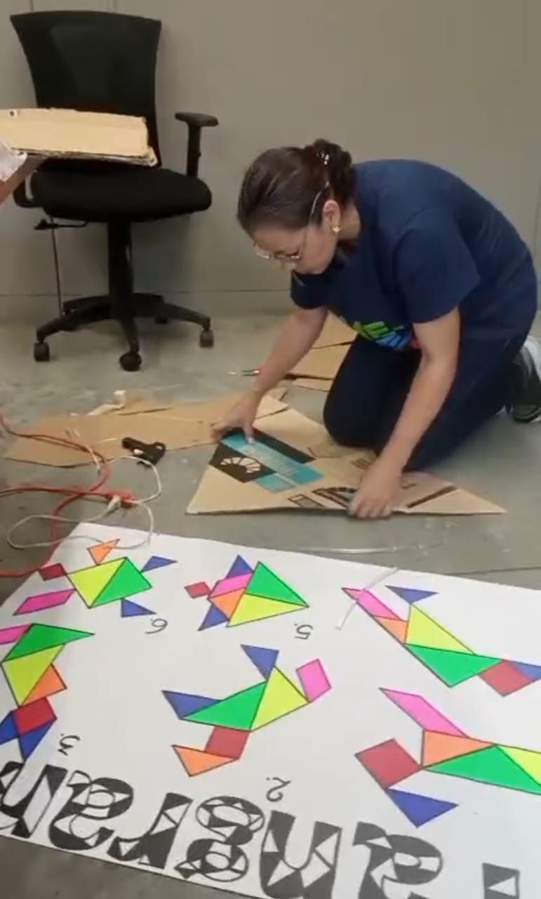
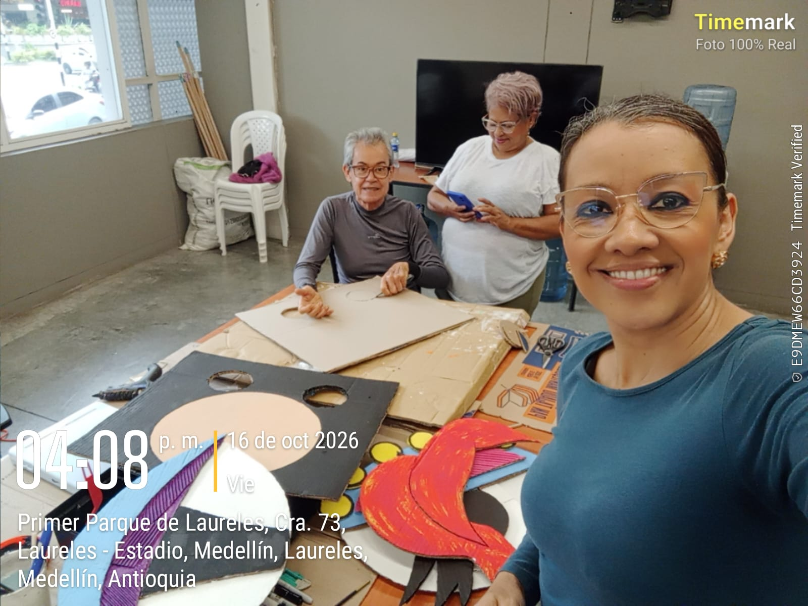
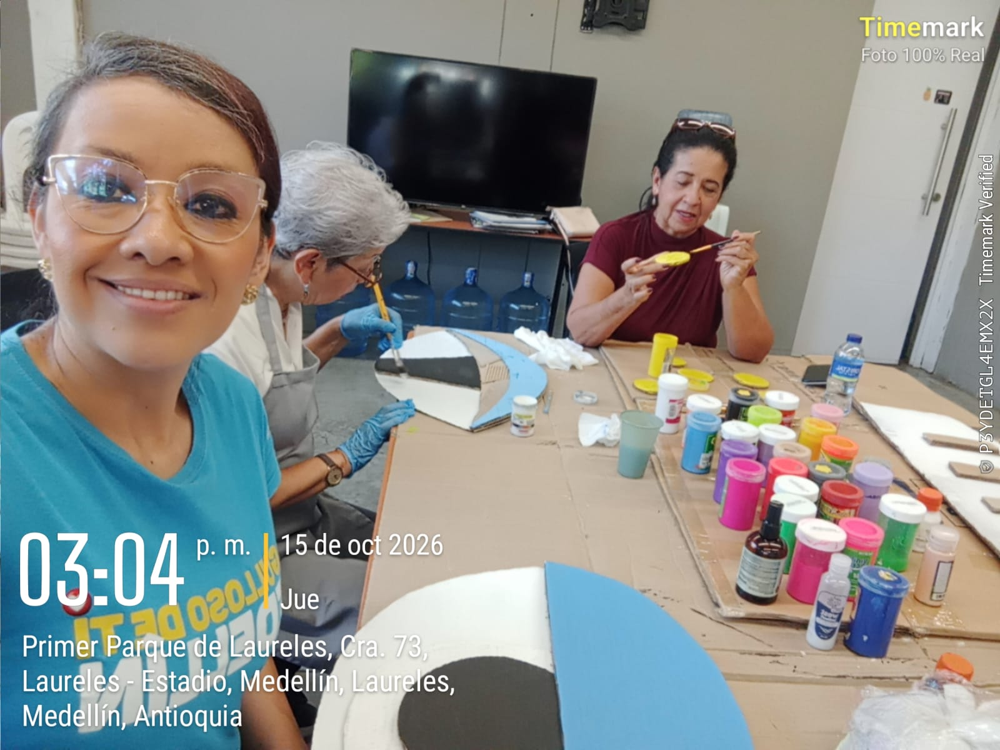
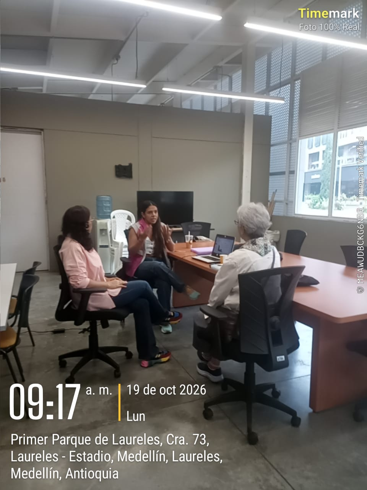
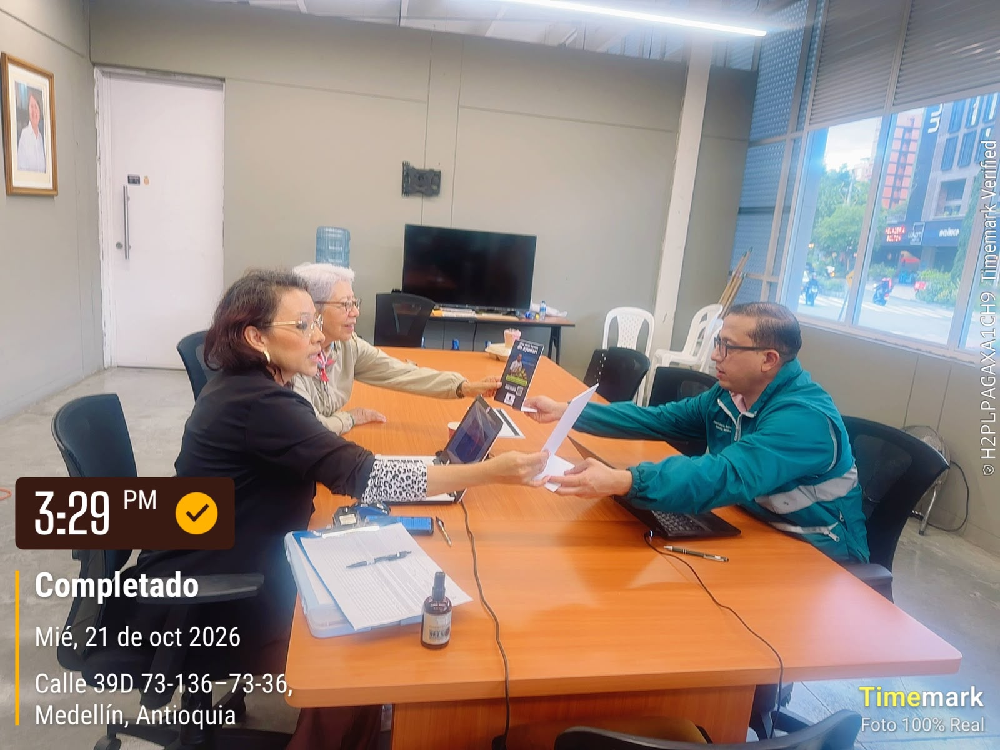
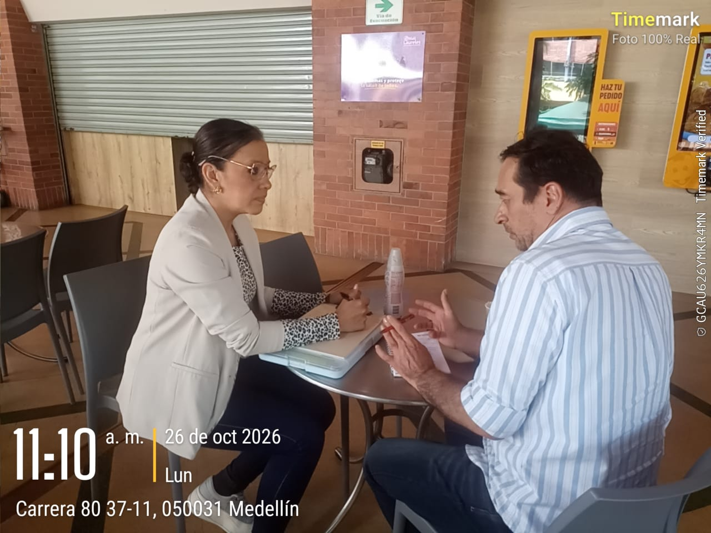
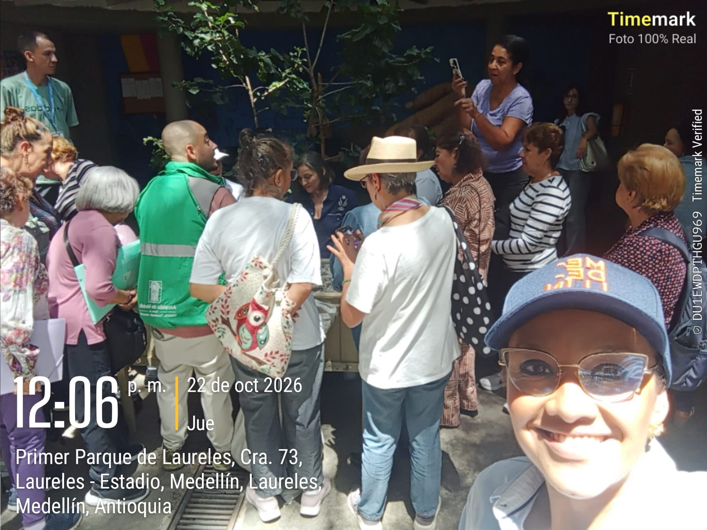
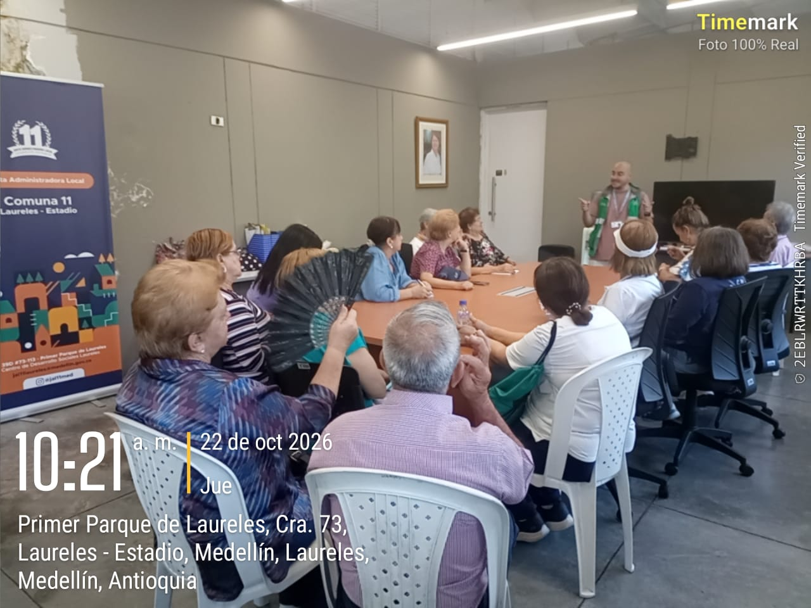
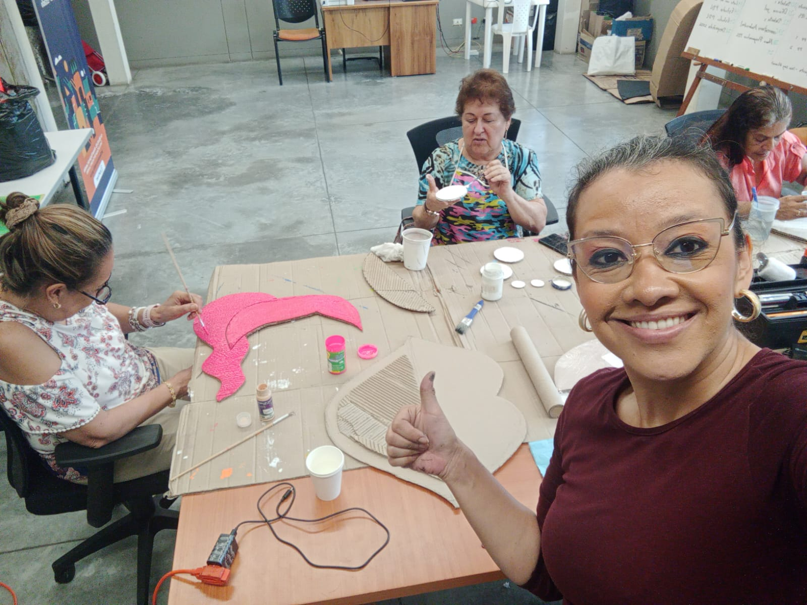
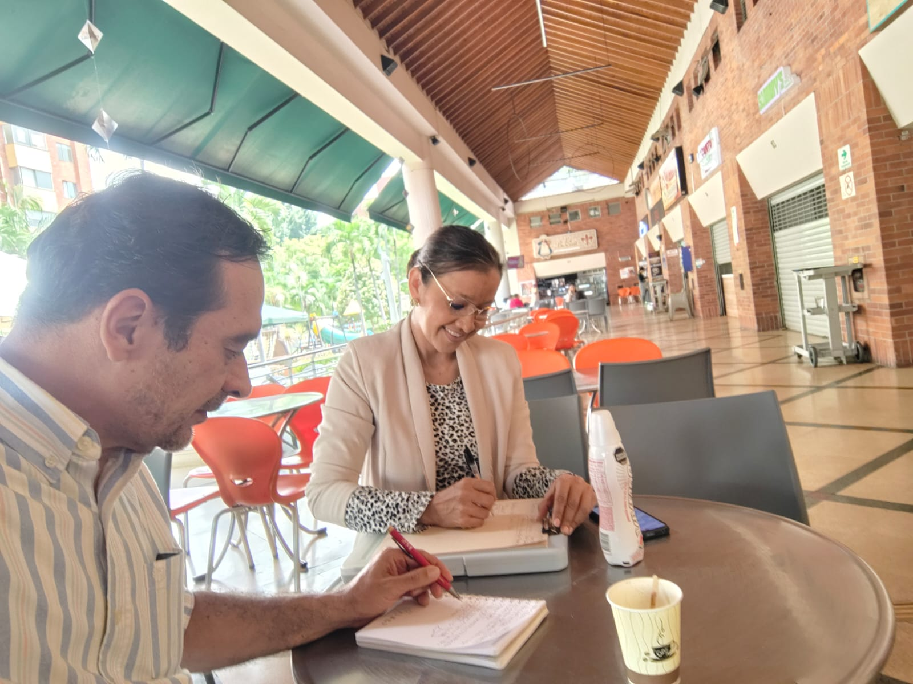
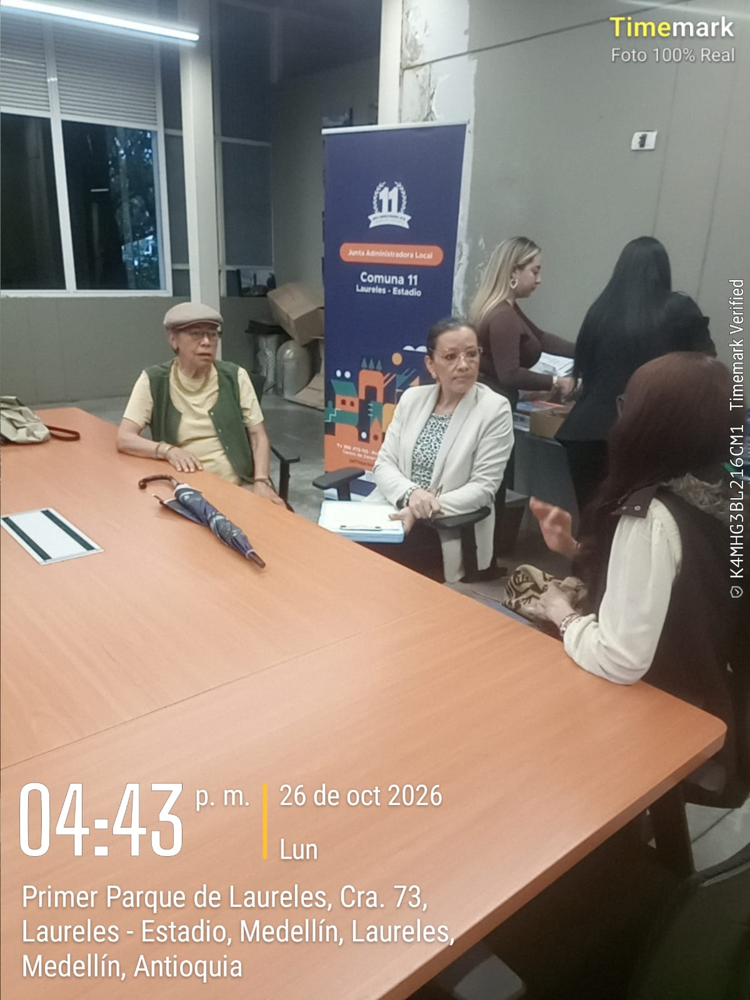
Pedir ayuda es un acto de valentía
Si tú o alguien que conoces está pasando por un momento difícil, no esperes. Hablar salva vidas. En la Comuna 11 te acompañamos, y la ciudad cuenta con profesionales listos para escucharte sin juzgar, de forma gratuita y confidencial.